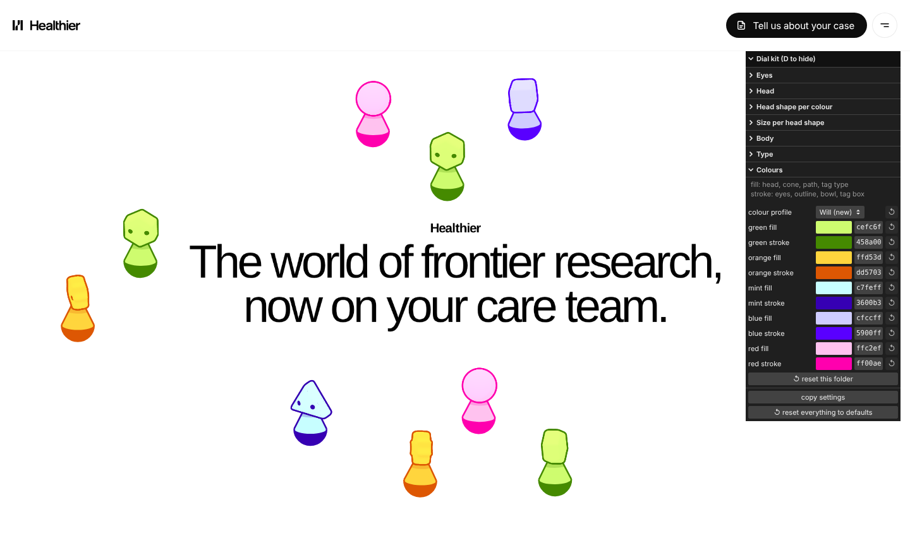
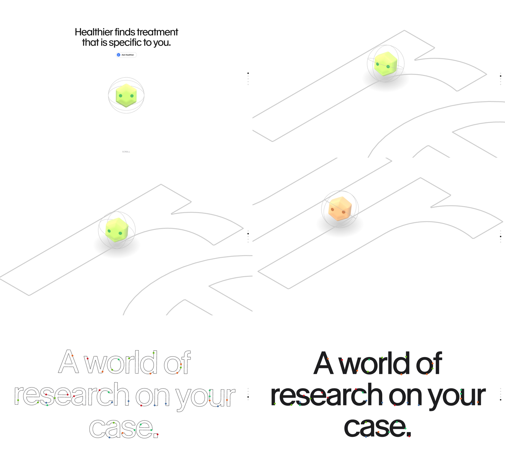
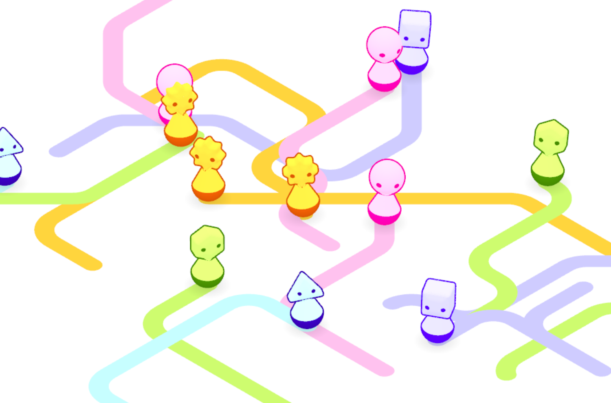
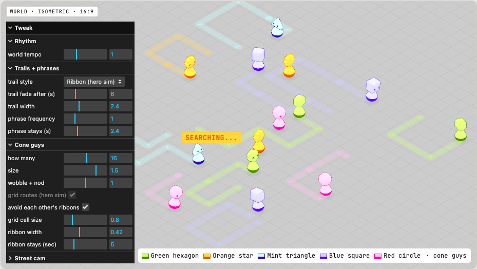
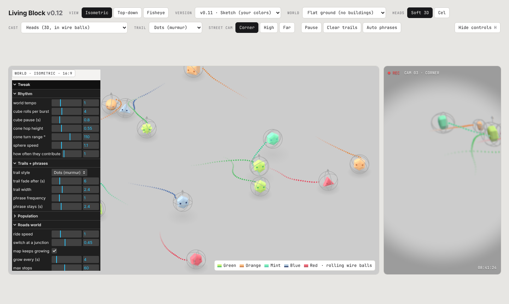
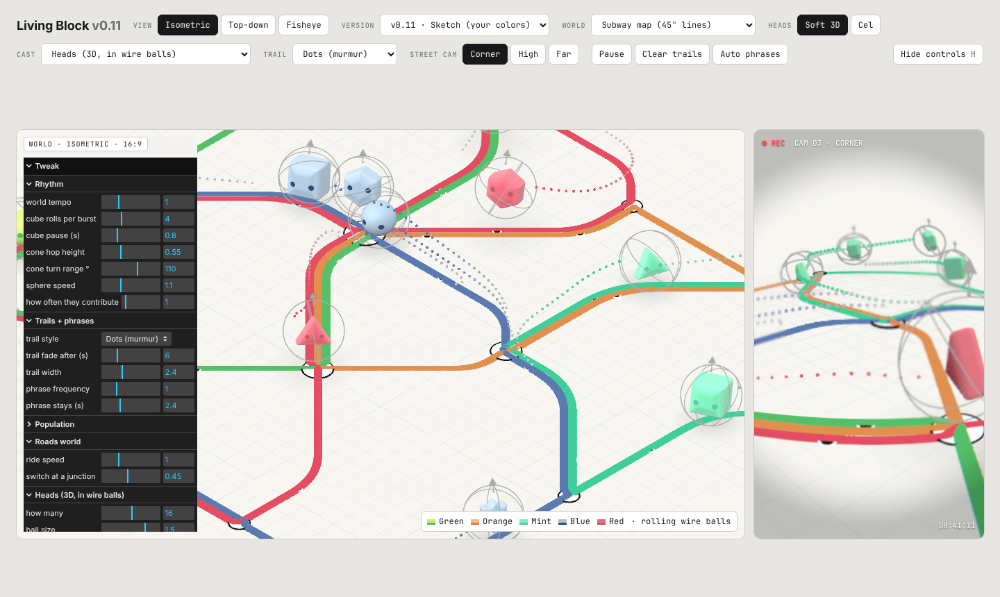
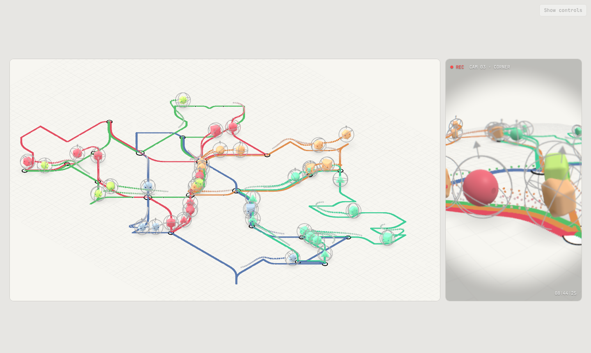
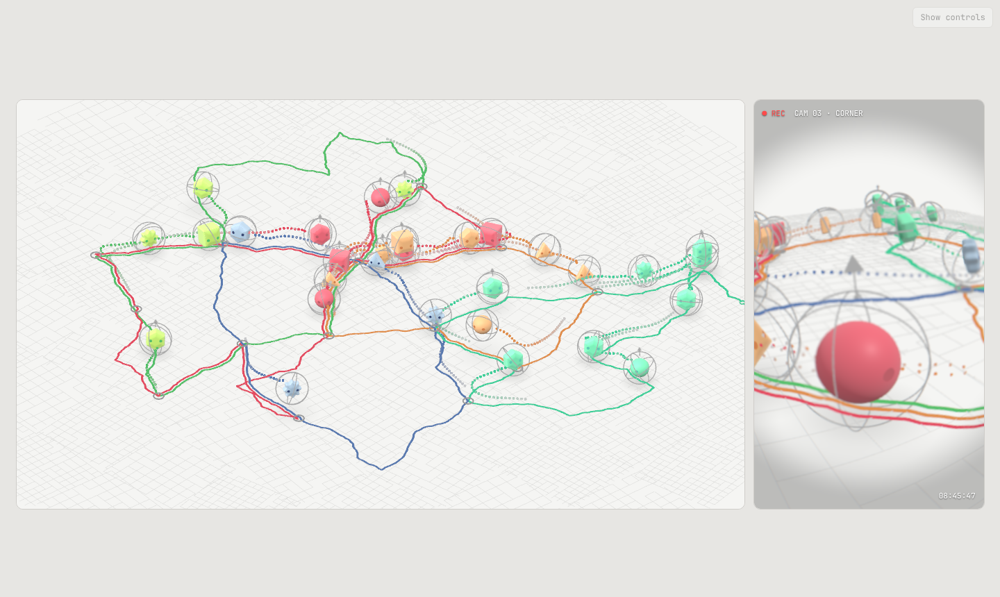
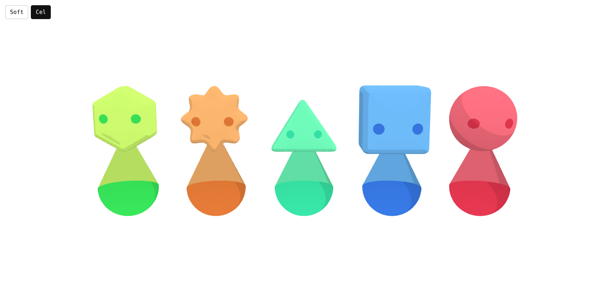

-
01 Healthier hero
live · plain HTMLhero-sim/index.htmlThe website hero: cone guys make ribbon paths around the headline, with a frosted nav and a dial kit for every look setting.

hero-sim · default palette, dial kit open three.js loads from a CDN — needs internet. Serve the folder for ES modules.
-
02 Scroll pilot
build requiredscroll-pilot/preview/index.htmlA five-step scroll story: the hero head, letter-shaped paths, an aerial view, then the type fills in.

scroll-pilot · the five steps The live preview is a generated, git-ignored build. Until it exists the primary link opens the storyboard and setup page instead.
-
03 Living Block playground
current · v0.12playground/index.htmlThe main sandbox: both flat grounds, every trail and camera as a switchable option — the cast is the cone guys. Preset links pick the colour version, world links pick the ground.

v0.12 · cone guys, paths 
flat ground · light grid · routes through square centres 
flat ground · plain three.js + lil-gui load from a CDN — needs internet.
-
04 Playground archive
frozen · v0.11archive/v011/index.htmlThe playground as committed in 858593e, before the cone-guys cast and flat ground world. Kept for comparison.

v0.11 · subway 
v0.11 · subway, grown 
v0.11 · roads, grown Verbatim copy of playground/index.html @ 858593e, plus preset deep links.
-
05 Cast viewer
live · glTFassets/3d/viewer.htmlThe five cone guys as ready-made .glb models with orbit controls.

cone-guys-all.glb · five characters three.js loads from a CDN — needs internet. Serve the folder.
Still only: v0.10 · Roads world at night — a screenshot; no live v0.10 program in this repo.